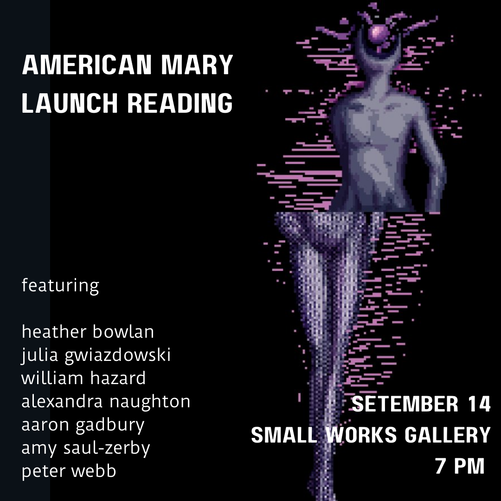

very excited to be performing with heather bowlan, julia gwiazdowski, alexandra naughton, aaron gadbury, amy saul-zerby, and peter webb at the launch reading for alexandra's novel American Mary on September 14th at Small Works Gallery in Philly. I'm also very excited about this cool flyer ebs sanders made for the event. If you're in or around Philly, please come join us!
williamthazard [at] pm.me